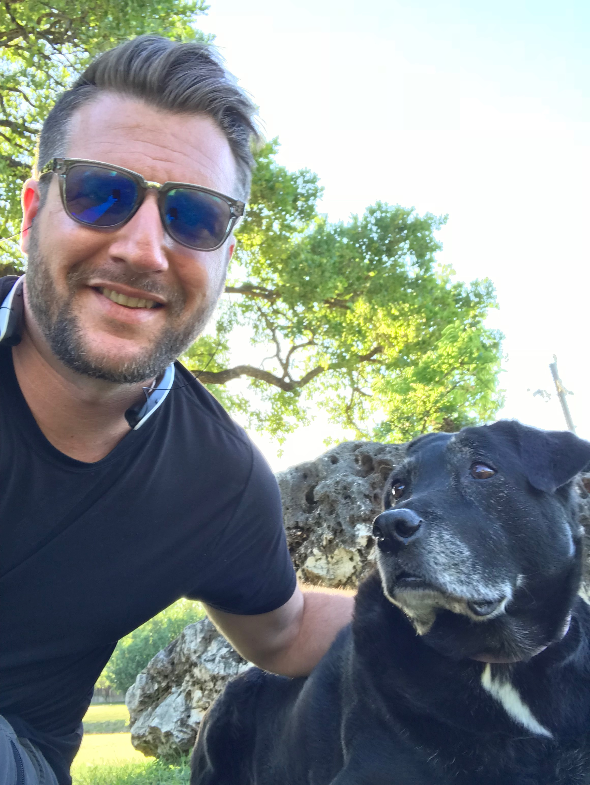
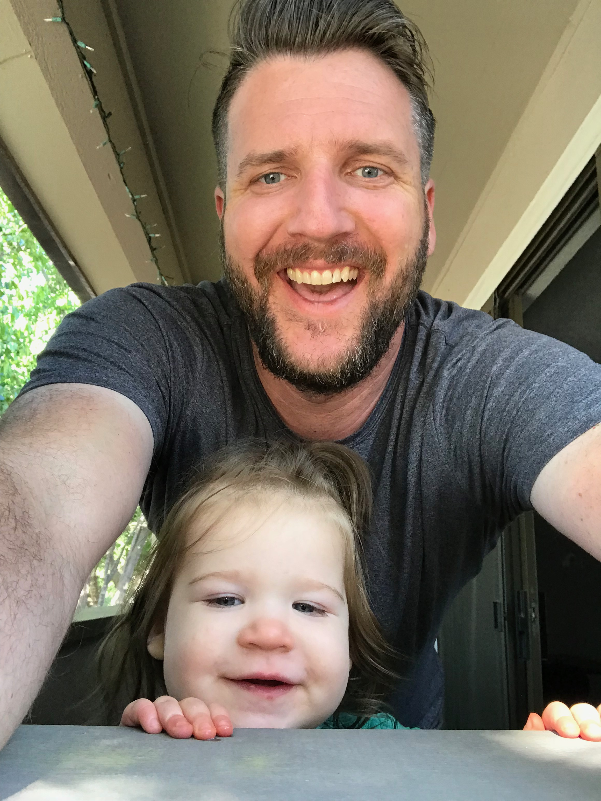

Hello, my name is David J. Miller and I am an aspiring web developer. I am currently teaching myself how to code, starting with the basics of html/css, and JavaScript. This is a very crude and early example of my skills but hey, ya got to start somewhere, right? Bare with me... this is a work in progress. I have just learned the basics of jQuery and I did a little nifty slideUp/slideDown trick here (you see it when the page first loads) and for some reason it really excites me! I'll be playing around with jQueary a lot more in the future on this site so bare with me as I get things up and running.
The picture below is a picture of my amazingly awesome dog, Lilah. She's been my sidekick for 11 years now.  Here we are hanging out at Anderson Mill Park under a nice shady tree. We visit this spot everyday after I get off work but unfortunately, she'll be living with my parents during the time I'm in the Galvanize web Devloper Immersive, as I'll just be gone to long during the day to tend to her needs. We will re-unite when I graduate from the course, I'll absolutely miss her but it's a sacrifice I have to make and this gives her an oppurtunity to have a much better life durning the next six months. My parents live on 5 acres of land and I've always considered it "doggie heaven" up there.
I'm also a proud father of a little baby girl... well she's not so little anymore, as the making of this site she is 15 months old and will be 16 months old this coming May, on the 14th. Here is a picture of her.  She is an absolute angel (in my eyes) and the only girl to ever "really" steal my heart. She is my heart, my light, she is my soul, my anchor. Before having a baby for myself, I never thought I could love a human being as much as I love that girl! Her full name is Esmé Linn Miller, her initials spell ELM and I'm contemplating getting my first tattoo of some cool looking Elm tree to symbolize my love for her but as of right now the thought of it is still germinating, it's not even a seedling just yet.
I'm starting the Web Development Immersive course at Galvanize on April 30th 2018 and this about wraps up how I feel about that...